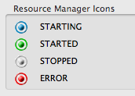
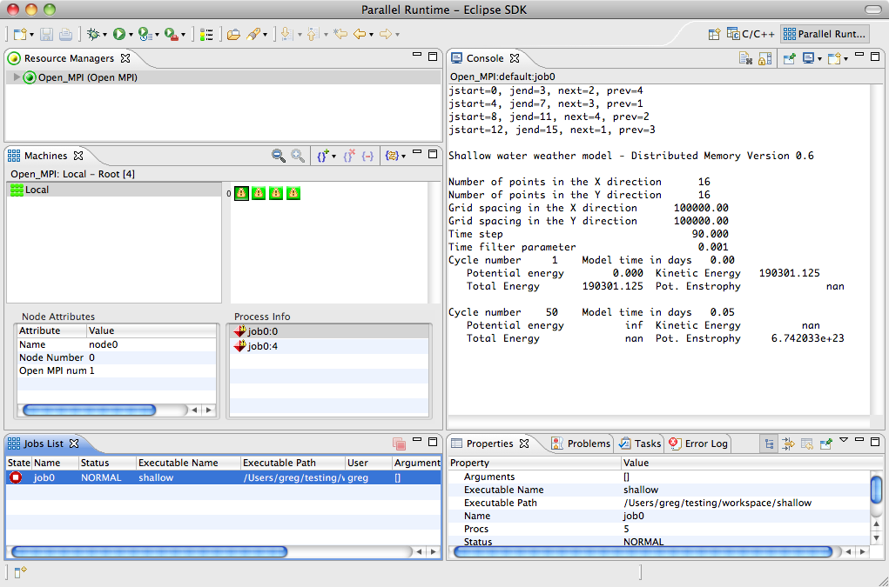
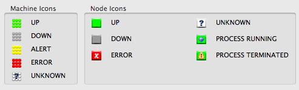
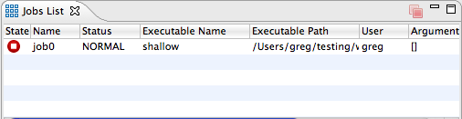
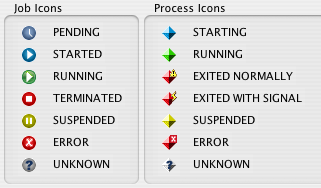
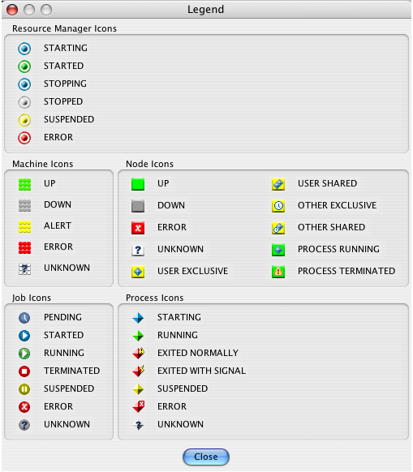

This section describes the features of PTP the enable the developer to monitor activity on target parallel machines, to monitor job status, and to control jobs. It will cover the following topics:
PTP provides two perspectives for job and system monitoring: the Parallel Runtime perspective and the System Monitoring perspective. The Parallel Runtime perspective is the original perspective provided by PTP and is used for most of the current resource managers. The System Monitoring perspective is new for PTP 5.0 and provides scalable monitoring of large remote systems. It is currently only used by the PBS resource manager, but addition resource managers will be transitioned over to this perspective in future releases.
The Resource Managers view shows all resource managers that have been configured, and is used to manage and control these resource managers. This view is shared between the Parallel Runtime and System Monitoring perspectives. Each resource manager has an icon and a name. The icon color indicates the current state of the resource manager. The following image shows two resource managers, one that is stopped and one that is running. A stopped resource manager is know to the system, but is not providing any information to PTP. A running resource manager is the normal state, and indicates that PTP is receiving information and can launch jobs using the resource manager.
|
 |
This view can also be used to create new resource managers, edit or remove resource managers, and control resource manager operation. Right-click in the view to access these functions.
Note that if a resource manager is removed and re-added, the launch configurations using the original resource manager must be changed to use the new one, even if it has the same name.

The Parallel Runtime perspective is used to monitor the status of target parallel systems and the parallel jobs that are running on these systems. At least one resource manager must be active to see anything in the views. See configuring resource managers for information on setting up resource managers and running parallel programs for how to launch a parallel program.
The perspective provides two main views for monitoring systems and jobs: Machines view and Jobs List view. Each of these views will be discussed in more detail below.
To open the Parallel Runtime perspective, select Window > Open Perspective > Other ... and choose Parallel Runtime from the list.

 Machines View
Machines ViewSelecting one of the machines in the upper left-handle panel will show the nodes of that machine in the upper right-hand panel of this view. Nodes are represented by an icon only. The icon shows the state of the node. The following image shows a typical view:

The left edge of the node panel displays the node number of the first node in the row. This is useful for quickly locating a particular node. Also, if there are too many nodes to fit in the display the zoom buttons in the view toolbar can be used to zoom the display.
The machine and node icons indicate the state of each machine and node, as shown in the following image. There are icons representing most typical states. There are also node states that indicate access to the nodes that could be controlled by a job scheduler (user exclusive, user shared, etc.) These states are only used by certain types of resource managers.

Placing the mouse over a node in the will show information about that node, including the node number, in a tooltip popup.
Double-click on a node icon to display the more detailed information about the node in the lower two panes of the view. The lower left-hand pane will show the detailed attributes of the node, and the lower right-hand pane will show the processes that are running, or have recently run, on the node.

Jobs List View
There are icons representing most job and process states. The following image shows the states that can be represented:

Usually a job will terminate when it finishes executing. However the user can also terminate a job using the terminate button on the toolbar. This button will become enabled when a running job is selected. Clicking on the button will instruct the resource manager to terminate the job. If the job is pending in a queue, then it will normally be removed from the queue.

The System Monitoring perspective provides scalable job and system monitoring for large-scale systems. It is based on the LLview monitoring system (http://www2.fz-juelich.de/jsc/llview) but has been extended to support monitoring of any type of system. It is currently only used for the PBS resource manager, but will be extended to other resource managers in the future.
Like the Parallel Runtime perspective, at least one resource manager must be active to see anything in the views. See configuring resource managers for information on setting up resource managers and running parallel programs for how to launch a parallel program.
To open the System Monitoring perspective, select Window > Open Perspective > Other ... and choose System Monitoring from the list.

The perspective provides four main views for monitoring systems and jobs: Resource Managers view, System Monitoring view, Active Jobs view, and Inactive Jobs view. The Resource Managers view is the same view used for the Parallel Runtime perspective. Each of the other views will be discussed in more detail below.
The view currently supports two mouse actions. Hovering over an element in the view will display a tooltip box with information about that element, including which jobs are associated with the element. Clicking on an element will highlight all associated elements (those with the same color) in the display. This shows the user where a particular job is running on the system.


Job actions are available by right-clicking on a job in the view. The actions available will depend on the type of job, its state, and the job owner.

Rows in the table can be sorted by clicking on the column heading. This will cycle though a sort sequence of "ascending", "descending", and none. Columns can also be removed from the view by right-clicking on the column heading and unselecting the column name.

Jobs that are launched by the user will initially appear in the Inactive Jobs view with status SUBMITTED. These jobs can be controlled (e.g. canceled) by right clicking on the job and selecting an available action. Refresh Job Status can be used to get an immediate update of the job status rather than waiting for the next update.

Once a job has finished executing, it will appear in this view with status COMPLETED. The stdout and stderr from the job can be displayed in the Console view by right clicking on the job and selecting the appropriate action. Completed jobs will remain in the view between Eclipse sessions, so you can leave Eclipse and return at a later time without losing information about the jobs. If you wish to remove the job from the view (permanently), use the Remove Job Entry action.